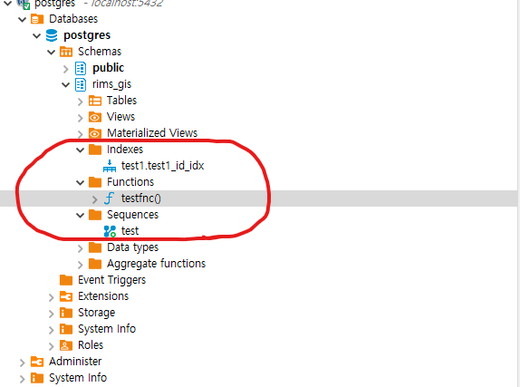

로컬작업
1.디비 스키마 변경 (우리가 사용하는스키마는 rims_gis)
1.1 rims_gis -> test999 --이미 덤프로 등록했으므로 안쓸거 변경
1.2 rimsgis -> rims_gis ** 아무것도 없는 디비부터 시작
2. 디비 백업시작 (pg_restore)
2.1 rims_gis 스키마에서 실행
3. indexs, functions,sequences 확인
3.1 개발디비와 로컬개수가 같은지? 확인

3.1.1 indexs, functions,sequences 3개중 없는 항목이 있을 경우 필요한 부분만 덤프해오기
4. 서치패스 변경
4.1 조회 : show search_path;
4.2 변경 : ALTER ROLE user1 SET search_path = rims_gis,public; --user1은 계정명 운영서버 등록 시 계정명 변경
4.3 조회 : show search_path;
5. fdw 설정
5.1 foregin table 호출
5.2 Mv 테이블 호출
6. 기타
999.1 작업했던 스크립트 정리해놓기
999.2 트리거 설정하기(아직 잘모름)
7. was에 연결하기
글로벌 프로퍼티에서 디비 host 변경